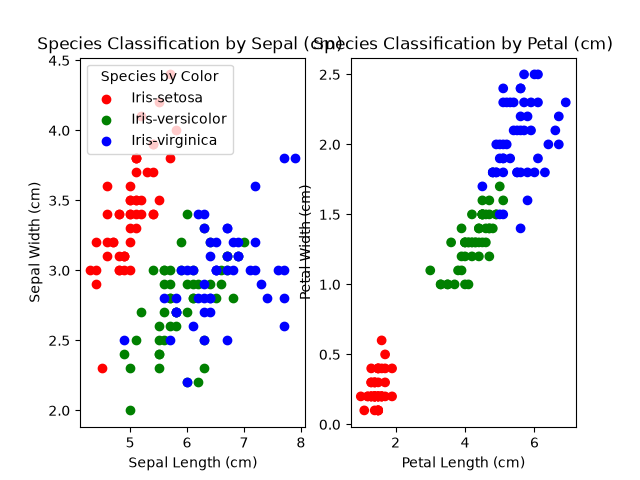

Machine Learning · Classification
Iris Flower Classification
A supervised learning project using sepal and petal measurements to classify three Iris flower species.

Problem
Determine whether physical flower measurements can be used to distinguish Iris species.
Process
The workflow removes the identifier column, checks the data, visualizes feature relationships, creates a train/test split, trains a classifier, and evaluates predictions.
Results and interpretation
The project demonstrates how exploratory plots can reveal feature separation before model training. The Decision Tree and Logistic Regression models each achieved 100% accuracy on the project test split. Petal length and petal width showed the clearest visual separation among the three species.
Limitations
The dataset is small and well-structured, so performance may not reflect the difficulty of noisier real-world classification problems.